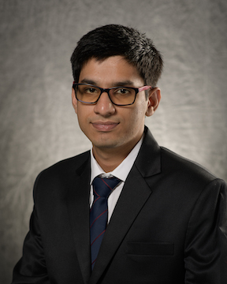

|
Sourya Basu
|

| I am a final year PhD student in the Department of Electrical & Computer Enginerring at the
University of Illinois at Urbana-Champaign, working with
Prof. Lav R. Varshney. I obtained my MS
from the same place in the year 2020. Previously, I obtained a B.Tech in
Electrical Engineering from the IIT Kanpur.
During my PhD, I have had the pleasure to collaborate with several amazing researchers from industry that
led to some of my favorite research works so far. With researchers from
Salesforce Research, we proposed a text sampling method for
large language models called mirostat sampling.
The work was published in ICLR and is available for generating high quality texts from the popular
LLaMA models here.
As an intern, I was fortunate to have worked with Payel Das,
Kush Varshney and others at IBM Research,
and with Suhas Lohit and team at Mitsubishi Electric Research Labs.
At these places, I worked on topics in group equivariant networks that led to several important works published in NeurIPS and
AAAI. I was also fortunate to have worked with Taco Cohen on gauge
equivariant networks that led to an interesting project now published in TMLR.
My current research interests include diffusion models, group equivariant networks, and natural language processing.
|
Email /
Scholar /
Github /
Twitter /
Linkedin /
Selected Publications
|